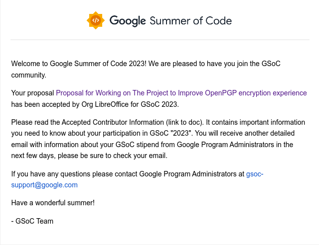

Pilot: Joining LibreOffice in GSoC'23
Hello guys. I am glad to share with you that I have been accepted to join LibreOffice this summer for GSoC'23 program. LibreOffice has been one of my favorite FOSS that I have been using for more than ten years. I will be working with some of the finest software developers that I have ever met and hope this summer becomes a fruitful one.
I will be working in improving the PGP/GPG Encryption support in LibreOffice through multiple stages. You can find my proposal here. Feel free to email me with any questions through my contact page and I will be available in LibreOffice's IRC channel (here) with the alias TokieSan.
I will be also posting semi-weekly updates here on what was done and in case I found any interesting challenges throughout the project I will be sharing them here.
Now, it is time to hit the ground running :-)

Posted at Fri, 02 Jun. 2023 - 08:03:54 PM